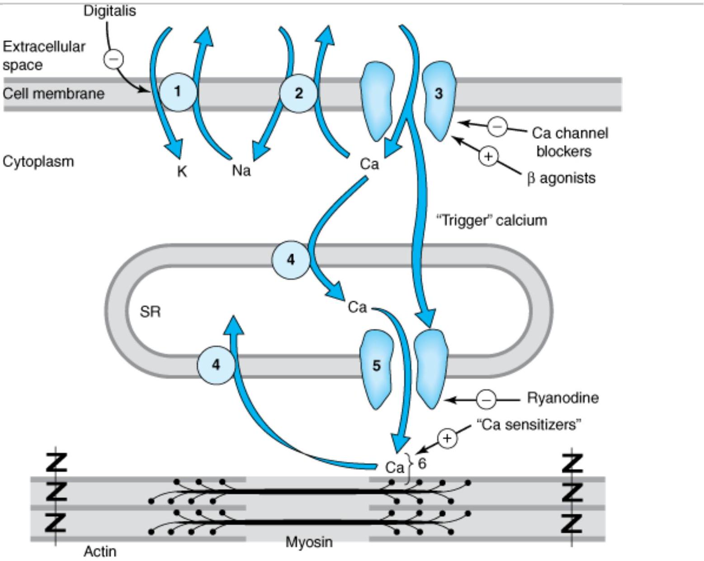
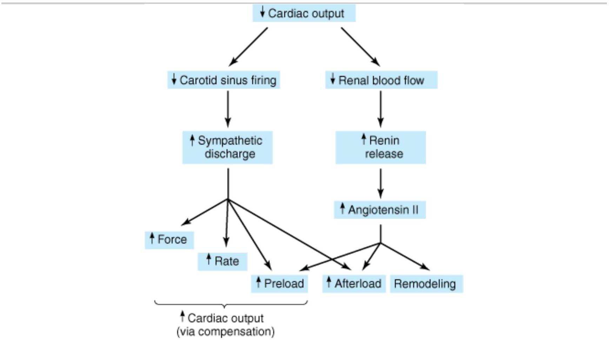
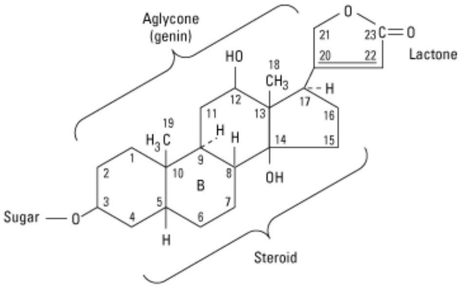
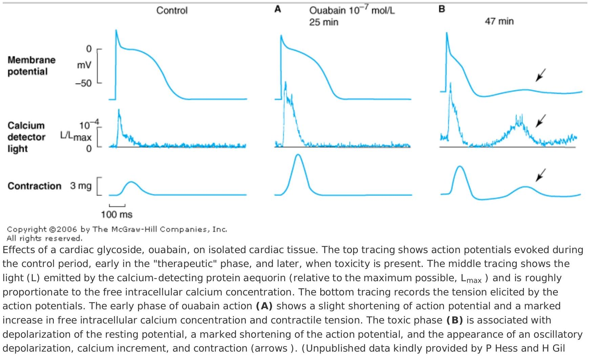
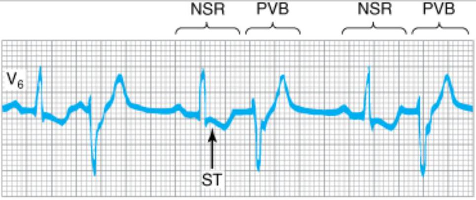

DRUGS USED IN HEART FAILURE
Heart failure occurs when cardiac output is inadequate to provide the oxygen needed by the body. It is a highly lethal condition, with a 5 -year mortality rate conventionally said to be about 50%. The most common cause of heart failure in the USA is coronary artery disease. Two major types of failure may be distinguished. In systolic failure, the mechanical pumping action (contractility) and the ejection fraction of the heart are reduced. In diastolic failure stiffening and loss of adequate relaxation plays a major role in reducing cardiac output and ejection fraction may be normal. Because other cardiovascular conditions are now being treated more effectively (especially myocardial infarction), more patients are surviving long enough for heart failure to develop, making this one of the cardiovascular conditions that is actually increasing in prevalence.
| Diuretics |
|---|
| Aldosterone receptor antagonists |
| Angiotensin-converting enzyme inhibitors |
| Angiotensin receptor blockers |
| Beta blockers |
| Cardiac glycosides |
| Vasodilators |
| Beta agonists, dopamine |
| Bipyridines |
| Natriuretic peptide |
Clinical research has shown that therapy directed at noncardiac targets is more valuable in the long-term treatment of heart failure than traditional positive inotropic agents (cardiac glycosides [digitalis]). Careful clinical trials have shown that angiotensin-converting enzyme (ACE) inhibitors, angiotensin receptor blockers, Bblockers, aldosterone receptor antagonists, and combined hydralazine-nitrate therapy are the only agents in current use that actually prolong life in patients with chronic heart failure. Positive inotropic drugs, on the other hand, can be very helpful in acute failure. They also reduce symptoms in chronic failure.
Control of Normal Cardiac Contractility
The vigor of contraction of heart muscle is determined by several processes that lead to the movement of actin and myosin filaments in the cardiac sarcomere (Figure 13-1). Ultimately, contraction results from the interaction of activator calcium (during systole) with the actin-troponin-tropomyosin system, thereby releasing the actin-myosin interaction. This calcium is released from the sarcoplasmic reticulum (SR). The amount released depends on the amount stored in the SR and on the amount of trigger calcium that enters the cell during the plateau of the action potential.
Copyright ©2006 by The McGraw-Hill Companies, Inc. All rights reserved.
Schematic diagram of a cardiac muscle sarcomere, with sites of action of several drugs that alter contractility (numbered structures). Site 1 is $\mathrm{Na}^{+} / \mathrm{K}^{+}$ ATPase, the sodium pump. Site 2 (NaxC) is the sodium/calcium exchanger. Site 3 is the voltage-gated calcium channel. Site 4 (SERCA) is a calcium transporter that pumps calcium into the sarcoplasmic reticulum (SR). Site 5 (RyR) is a calcium channel in the membrane of the SR that is triggered to release stored calcium by activator calcium. Site 6 is the actin-troponin-tropomyosin complex at which activator calcium brings about the contractile interaction of actin and myosin.
SENSITIVITY OF THE CONTRACTILE PROTEI NS TO CALCI UM
The determinants of calcium sensitivity, ie, the curve relating the shortening of cardiac myofibrils to the cytoplasmic calcium concentration, are incompletely understood, but several types of drugs can be shown to affect it in vitro. Levosimendan is the most recent example of a drug that increases calcium sensitivity (it may also inhibit phosphodiesterase) and reduces symptoms in models of heart failure.
THE AMOUNT OF CALCI UM RELEASED FROM THE SARCOPLASMIC RETICULUM
A small rise in free cytoplasmic calcium, brought about by calcium influx during the action potential, triggers the opening of ryanodine-sensitive calcium channels (RyR2) in the membrane of the cardiac SR and the rapid release of a large amount of the ion into the cytoplasm in the vicinity of the actin-troponintropomyosin complex. The amount released is proportional to the amount stored in the SR and the amount of trigger calcium that enters the cell through the cell membrane. (Ryanodine is a potent negative inotropic plant alkaloid that interferes with the release of calcium through cardiac SR channels.)
THE AMOUNT OF CALCI UM STORED IN THE SARCOPLASMI C RETI CULUM
The SR membrane contains a very efficient calcium uptake transporter, known as the sarcoplasmic endoplasmic reticulum $\mathrm{Ca}^{2+}$-ATPase (SERCA). This pump maintains free cytoplasmic calcium at very low levels during diastole by pumping calcium into the SR. The amount of calcium sequestered in the SR is thus determined, in part, by the amount accessible to this transporter. This in turn is dependent on the balance of calcium influx (primarily through the voltage-gated membrane calcium channels) and calcium efflux, the amount removed from the cell (primarily via the sodium-calcium exchanger, a transporter in the cell membrane).
THE AMOUNT OF TRIGGER CALCI UM
The amount of trigger calcium that enters the cell depends on the availability of membrane calcium channels (primarily the L type) and the duration of their opening. As described in Chapters 6 and 9, sympathomimetics cause an increase in calcium influx through an action on these channels. Conversely, the calcium channel blockers (see Chapter 12) reduce this influx and depress contractility.
ACTIVITY OF THE SODI UM-CALCI UM EXCHANGER
This antiporter uses the sodium gradient to move calcium against its concentration gradient from the cytoplasm to the extracellular space. Extracellular concentrations of these ions are much less labile than intracellular concentrations under physiologic conditions. The sodium-calcium exchanger's ability to carry out this transport is thus strongly dependent on the intracellular concentrations of both ions, especially sodium.
INTRACELLULAR SODIUM CONCENTRATION AND ACTIVITY OF NA+ / K ${}^{+}$ATPASE
$\mathrm{Na}^{+} / \mathrm{K}^{+}$ ATPase, by removing intracellular sodium, is the major determinant of sodium concentration in the cell. The sodium influx through voltage-gated channels, which occurs as a normal part of almost all cardiac action potentials, is another determinant although the amount of sodium that enters with each action potential is much less than 1% of the total intracellular sodium. As described below, $\mathrm{Na}^{+} / \mathrm{K}^{+}$ ATPase appears to be the primary target of cardiac glycosides.
Pathophysiology of Heart Failure
Heart failure is a syndrome with multiple causes that may involve the right ventricle, the left ventricle, or both. Cardiac output in heart failure is usually below the normal range. Systolic dysfunction, with reduced cardiac output and significantly reduced ejection fraction (<45%), is typical of acute failure, especially that resulting from myocardial infarction. Diastolic dysfunction often occurs as a result of hypertrophy and stiffening of the myocardium, and although cardiac output is reduced, ejection fraction may be normal. Heart failure due to diastolic dysfunction does not usually respond optimally to positive inotropic drugs.
Rarely, "high-output" failure may occur. In this condition, the demands of the body are so great that even increased cardiac output is insufficient. High-output failure can result from hyperthyroidism, beriberi, anemia, and arteriovenous shunts. This form of failure responds poorly to the drugs discussed in this chapter and should be treated by correcting the underlying cause.
The primary signs and symptoms of all types of heart failure include tachycardia, decreased exercise tolerance, shortness of breath, peripheral and pulmonary edema, and cardiomegaly. Decreased exercise tolerance with rapid muscular fatigue is the major direct consequence of diminished cardiac output. The other manifestations result from the attempts by the body to compensate for the intrinsic cardiac defect.
Neurohumoral (extrinsic) compensation involves two major mechanisms previously presented in Figure 6-7: the sympathetic nervous system and the renin-angiotensin-aldosterone hormonal response. Some of the pathologic as well as beneficial features of these compensatory responses are illustrated in Figure 13-2. The baroreceptor reflex appears to be reset, with a lower sensitivity to arterial pressure, in patients with heart failure. As a result, baroreceptor sensory input to the vasomotor center is reduced even at normal pressures; sympathetic outflow is increased, and parasympathetic outflow is decreased. Increased sympathetic outflow causes tachycardia, increased cardiac contractility, and increased vascular tone.
Copyright ©2006 by The McGraw-Hill Companies, Inc. All rights reserved.
Some compensatory responses that occur during congestive heart failure. In addition to the effects shown, angiotensin II increases sympathetic effects by facilitating norepinephrine release.
While the increased preload, force, and heart rate initially increase cardiac output, increased arterial tone results in increased afterload and decreased ejection fraction, cardiac output, and renal perfusion. After a relatively short time, complex down-regulatory changes in the $B_{1}$-adrenoceptor—G protein-effector system take place that result in diminished stimulatory effects. Beta ${}_{2}$ receptors are not down-regulated and may develop increased coupling to the I P ${}_{3}$-DAG cascade. It has also been suggested that cardiac $B_{3}$ receptors (which do not appear to be down-regulated in failure) may mediate negative inotropic effects. Excessive beta activation can lead to leakage of calcium from the SR via RyR2 channels and contributes to stiffening of the ventricles and arrhythmias. Increased angiotensin II production leads to increased aldosterone secretion (with sodium and water retention), to increased afterload, and to remodeling of both heart and vessels (discussed below). Other hormones may also be released, including natriuretic peptide and endothelin (see Chapter 17).
The most important intrinsic compensatory mechanism is myocardial hypertrophy. This increase in muscle mass helps maintain cardiac performance. However, after an initial beneficial effect, hypertrophy can lead to ischemic changes, impairment of diastolic filling, and alterations in ventricular geometry. Remodeling is the term applied to dilation (other than that due to passive stretch) and other slow structural changes that occur in the stressed myocardium. It may include proliferation of connective tissue cells as well as abnormal myocardial cells with some biochemical characteristics of fetal myocytes. Ultimately, myocytes in the failing heart die at an accelerated rate through apoptosis, leaving the remaining myocytes subject to even greater stress.
The severity of heart failure is usually described according to a scale devised by the New York Heart Association. Class I failure is associated with no limitations on ordinary activities and symptoms that occur only with greater than ordinary exercise. Class II is characterized by slight limitation of ordinary activities, which result in fatigue and palpitations with ordinary physical activity. Class III failure results in no symptoms at rest, but fatigue, etc, with less than ordinary physical activity. Class IV is associated with symptoms even when the patient is at rest.
Pathophysiology of Cardiac Performance
Cardiac performance is a function of four primary factors:
- (1) Preload: When some measure of left ventricular performance such as stroke volume or stroke work is plotted as a function of left ventricular filling pressure or end-diastolic fiber length, the resulting curve is termed the left ventricular function curve (Figure 13-3). The ascending limb (<15 mm Hg filling pressure) represents the classic Frank-Starling relation. Beyond approximately 15 mm Hg , there is a plateau of performance. Preloads greater than 20-25 mm Hg result in pulmonary congestion. As noted above, preload is usually increased in heart failure because of increased blood volume and venous tone. Because the curve of the failing heart is lower, the plateau is reached at much lower values of stroke work or output. Increased fiber length or filling pressure increases oxygen demand in the myocardium. Reduction of high filling pressure is the goal of salt restriction and diuretic therapy in heart failure. Venodilator drugs (eg, nitroglycerin) also reduce preload by redistributing blood away from the chest into peripheral veins.
- (2) Afterload: Afterload is the resistance against which the heart must pump blood and is represented by aortic impedance and systemic vascular resistance. As cardiac output falls in chronic failure, there is a reflex increase in systemic vascular resistance, mediated in part by increased sympathetic outflow and circulating catecholamines and in part by activation of the renin-angiotensin system. Endothelin, a potent vasoconstrictor peptide, may also be involved. This sets the stage for the use of drugs that reduce arteriolar tone in heart failure.
- (3) Contractility: Heart muscle obtained by biopsy from patients with chronic low-output failure demonstrates a reduction in intrinsic contractility. As contractility decreases in the patient, there is a reduction in the velocity of muscle shortening, the rate of intraventricular pressure development (dP/dt), and the stroke output achieved (Figure 13-3). However, the heart is still capable of some increase in all of these measures of contractility in response to inotropic drugs.
- (4) Heart rate: The heart rate is a major determinant of cardiac output. As the intrinsic function of the heart decreases in failure and stroke volume diminishes, an increase in heart rate—through sympathetic activation of Badrenoceptors—is the first compensatory mechanism that comes into play to maintain cardiac output.
Copyright ©2006 by The McGraw-Hill Companies, Inc. All rights reserved.
Relation of left ventricular (LV) performance to filling pressure in patients with acute myocardial infarction, an important cause of heart failure. The upper line indicates the range for normal, healthy individuals. If acute heart failure occurs, function is shifted down and to the right. Similar depression is observed in patients with chronic heart failure. (Modified and reproduced with permission, from Swan HJ C, Parmley WW: Congestive heart failure. In: Sodeman WA Jr, Sodeman TM [editors]. Pathologic Physiology. Saunders, 1979.)
BASI C PHARMACOLOGY OF DRUGS USED IN HEART FAI LURE
Although digitalis is not the first drug and never the only drug used in heart failure, we begin our discussion with this group because other drugs are discussed in more detail in other chapters. For a more detailed discussion of the cardiac glycosides the reader is referred to earlier editions of this book.
Digitalis
Digitalis is the genus name for the family of plants that provide most of the medically useful cardiac glycosides, eg, digoxin. Such plants have been known for thousands of years but were used erratically and with variable success until 1785, when William Withering, an English physician and botanist, published a monograph describing the clinical effects of an extract of the purple foxglove plant (Digitalis purpurea, $a$ major source of these agents).
Chemistry
All of the cardiac glycosides, or cardenolides—of which digoxin is the prototype—combine a steroid nucleus linked to a lactone ring at the 17 position and a series of sugars at carbon 3 of the nucleus. Because they lack an easily ionizable group, their solubility is not pH-dependent. Digoxin is obtained from Digitalis lanata , the white foxglove, but many common plants contain cardiac glycosides.
Pharmacokinetics
ABSORPTION AND DISTRIBUTION
Digoxin, the only cardiac glycoside used in the USA, is 65-80% absorbed after oral administration. Absorption of other glycosides varies from zero to nearly 100%. Once present in the blood, all cardiac glycosides are widely distributed to tissues, including the central nervous system.
METABOLISM AND EXCRETION
Digoxin is not extensively metabolized in humans; almost two thirds is excreted unchanged by the kidneys. Its renal clearance is proportionate to creatinine clearance. Equations and nomograms are available for adjusting digoxin dosage in patients with renal impairment.
Pharmacodynamics
Digoxin has multiple direct and indirect cardiovascular effects, with both therapeutic and toxic consequences. In addition, it has undesirable effects on the central nervous system and gut.
At the molecular level, all therapeutically useful cardiac glycosides inhibit $\mathrm{Na}^{+} / \mathbf{K}^{+}$ ATPase, the membrane-bound transporter often called the sodium pump. Inhibition of this transporter over most of the dose range has been extensively documented in all tissues studied. It is probable that this inhibitory action is largely responsible for the therapeutic effect (positive inotropy) as well as a major portion of the toxicity of digitalis. Other molecular-level effects of digitalis have been studied in the heart and are discussed below. The fact that a receptor for cardiac glycosides exists on the sodium pump has prompted some investigators to propose that an endogenous "digitalis-like" steroid, possibly ouabain, must exist.
CARD I AC EFFECTS
Mechanical Effects
Cardiac glycosides increase contraction of the cardiac sarcomere (Figure 13-1) by increasing the free calcium concentration in the vicinity of the contractile proteins during systole. The increase in calcium concentration is the result of a two-step process: first, an increase of intracellular sodium concentration because of $\mathrm{Na}^{+} / \mathrm{K}^{+}$ ATPase inhibition (1 in Figure 13-1); and second, a relative reduction of calcium expulsion from the cell by the sodium-calcium exchanger (NaxC in Figure 13-1) caused by the increase in intracellular sodium. The increased cytoplasmic calcium is sequestered by the SERCA in the SR for later release. Other mechanisms have been proposed but are not well supported.
The net result of the action of therapeutic concentrations of a cardiac glycoside is a distinctive increase in cardiac contractility (Figure 13-4, bottom trace). In isolated myocardial preparations, the rate of development of tension and of relaxation are both increased, with little or no change in time to peak tension. This effect occurs in both normal and failing myocardium, but in the intact animal or patient the responses are modified by cardiovascular reflexes and the pathophysiology of heart failure.
Copyright ©2006 by The McGraw-Hill Companies, Inc. All rights reserved.
Wier.)
Electrical Effects
The effects of digitalis on the electrical properties of the heart are a mixture of direct and autonomic actions. Direct actions on the membranes of cardiac cells follow a well-defined progression: an early, brief prolongation of the action potential, followed by shortening (especially the plateau phase). The decrease in action potential duration is probably the result of increased potassium conductance that is caused by increased intracellular calcium (see Chapter 14). All of these effects can be observed at therapeutic concentrations in the absence of overt toxicity (Table 13-2).
| Tissue or Variable | Effects at Therapeutic Dosage | Effects at Toxic Dosage |
|---|---|---|
| Sinus node | $\downarrow$ Rate | $\downarrow$ Rate |
| Atrial muscle | $\downarrow$ Refractory period | $\downarrow$ Refractory period, arrhythmias |
| Atrioventricular node | $\downarrow$ Conduction velocity, $\dagger$ refractory period | $\uparrow$ Refractory period, arrhythmias |
| Purkinje system, ventricular muscle | Slight $\downarrow$ refractory period | Extrasystoles, tachycardia, fibrillation |
| Electrocardiogram | $\uparrow$ PR interval, $\downarrow$ QT interval | Tachycardia, fibrillation, arrest at extremely high dosage |
At higher concentrations, resting membrane potential is reduced (made less negative) as a result of inhibition of the sodium pump and reduced intracellular potassium. As toxicity progresses, oscillatory depolarizing afterpotentials appear following normally evoked action potentials (Figure 13-4, panel B). The afterpotentials (also known as delayed afterdepolarizations, DADs ) are associated with overloading of the intracellular calcium stores and oscillations in the free intracellular calcium ion concentration. When afterpotentials reach threshold, they elicit action potentials (premature depolarizations or ectopic "beats") that are coupled to the preceding normal action potentials. If afterpotentials in the Purkinje conducting system regularly reach threshold in this way, bigeminy will be recorded on the electrocardiogram (Figure 13-5). With further intoxication, each afterpotential-evoked action potential will itself elicit a suprathreshold afterpotential, and a self-sustaining tachycardia will be established. If allowed to progress, such a tachycardia may deteriorate into fibrillation; in the case of ventricular fibrillation, the arrhythmia will be rapidly fatal unless corrected.
Copyright ©2006 by The McGraw-Hill Companies, Inc. All rights reserved.
Electrocardiographic record showing digitalis-induced bigeminy. The complexes marked NSR are normal sinus rhythm beats; an inverted T wave and depressed ST segment are present. The complexes marked PVB are premature ventricular beats and are the electrocardiographic manifestations of depolarizations evoked by delayed oscillatory afterpotentials as shown in Figure 13-4. (Modified and reproduced, with permission, from Goldman MJ: Principles of Clinical Electrocardiography, 12th ed. Lange, 1986.)
Autonomic actions of cardiac glycosides on the heart involve both the parasympathetic and the sympathetic systems. In the lower portion of the dose range, cardioselective parasympathomimetic effects predominate. In fact, these atropine-blockable effects account for a significant portion of the early electrical effects of digitalis (Table 13-2). This action involves sensitization of the baroreceptors, central vagal stimulation, and facilitation of muscarinic transmission at the cardiac muscle cell. Because cholinergic innervation is much richer in the atria, these actions affect atrial and atrioventricular nodal function more than Purkinje or ventricular function. Some of the cholinomimetic effects are useful in the treatment of certain arrhythmias. At toxic levels, sympathetic outflow is increased by digitalis. This effect is not essential for typical digitalis toxicity but sensitizes the myocardium and exaggerates all the toxic effects of the drug.
The most common cardiac manifestations of digitalis toxicity include atrioventricular junctional rhythm, premature ventricular depolarizations, bigeminal rhythm, and second-degree atrioventricular blockade. However, it is claimed that digitalis can cause virtually any arrhythmia.
EFFECTS ON OTHER ORGANS
Cardiac glycosides affect all excitable tissues, including smooth muscle and the central nervous system. The gastrointestinal tract is the most common site of digitalis toxicity outside the heart. The effects include anorexia, nausea, vomiting, and diarrhea. This toxicity may be partially caused by direct effects on the gastrointestinal tract but is also the result of central nervous system actions.
Central nervous system effects include vagal and chemoreceptor trigger zone stimulation. Less often, disorientation and hallucinations—especially in the elderly—and visual disturbances are noted. The latter effect may include aberrations of color perception. Gynecomastia is a rare effect reported in men taking digitalis.
I NTERACTIONS WITH POTASSIUM, CALCIUM, AND MAGNESIUM
Potassium and digitalis interact in two ways. First, they inhibit each other's binding to $\mathrm{Na}^{+} / \mathrm{K}^{+}$ ATPase; therefore, hyperkalemia reduces the enzyme-inhibiting actions of cardiac glycosides, whereas hypokalemia facilitates these actions. Second, abnormal cardiac automaticity is inhibited by hyperkalemia (see Chapter 14). Moderately increased extracellular $\mathrm{K}^{+}$therefore reduces the effects of digitalis, especially the toxic effects.
Calcium ion facilitates the toxic actions of cardiac glycosides by accelerating the overloading of intracellular calcium stores that appears to be responsible for digitalis-induced abnormal automaticity. Hypercalcemia therefore increases the risk of a digitalis-induced arrhythmia. The effects of magnesium ion appear to be opposite to those of calcium. These interactions mandate careful evaluation of serum electrolytes in patients with digitalis-induced arrhythmias.
Other Positive I notropic Drugs Used in Heart Failure
Drugs that inhibit phosphodiesterases, the family of enzymes that inactivate cAMP and cGMP, have long been used in therapy of heart failure. Although they have positive inotropic effects, most of their benefits appear to derive from vasodilation, as discussed below. The bipyridines inamrinone and milrinone are the most successful of these agents found to date, but their usefulness is quite limited. Levosimendan, an investigational drug that sensitizes the troponin system to calcium, also appears to inhibit phosphodiesterase and cause some vasodilation in addition to its inotropic effects. Some early clinical trials suggest that this drug may be useful in patients with heart failure. A group of B-adrenoceptor stimulants has also been used as digitalis substitutes, but they may increase mortality (see below).
BI PYRI DI NES
Inamrinone (previously called amrinone) and milrinone are bipyridine compounds that inhibit phosphodiesterase isozyme 3 (PDE-3). They are active orally as well as parenterally but are only available in parenteral forms. They have elimination half-lives of 3-6 hours, with 10-40% being excreted in the urine.
Pharmacodynamics
The bipyridines increase myocardial contractility by increasing inward calcium flux in the heart during the action potential; they may also alter the intracellular movements of calcium by influencing the sarcoplasmic reticulum. They also have an important vasodilating effect. Inhibition of phosphodiesterase results in an increase in cAMP and the increase in contractility and vasodilation.
The toxicity of inamrinone includes nausea and vomiting; arrhythmias, thrombocytopenia, and liver enzyme changes have also been reported in a significant number of patients. This drug has been withdrawn in some countries. Milrinone appears less likely to cause bone marrow and liver toxicity than inamrinone, but it does cause arrhythmias. Inamrinone and milrinone are now used only intravenously and only for acute heart failure or for severe exacerbation of chronic heart failure.
BETA-ADRENORECEPTOR STI MULANTS
The general pharmacology of these agents is discussed in Chapter 9. The selective $B_{1}$ agonist that has been most widely used in patients with heart failure is dobutamine. This parenteral drug produces an increase in cardiac output together with a decrease in ventricular filling pressure. Some tachycardia and an increase in myocardial oxygen consumption have been reported. Therefore, the potential for producing angina or arrhythmias in patients with coronary artery disease must be considered, as well as the tachyphylaxis that accompanies the use of any Bstimulant. Intermittent dobutamine infusion may benefit some patients with chronic heart failure.
Dopamine has also been used in acute heart failure and may be particularly helpful if there is a need to raise blood pressure.
Drugs Without Positive I notropic Effects Used in Heart Failure
Paradoxically, these agents—not positive inotropic drugs—are the first-line therapies for chronic heart failure. The drugs most commonly used are diuretics, ACE inhibitors, angiotensin receptor antagonists, and Bblockers (see Table 13-1). In acute failure, diuretics and vasodilators play important roles.
DIURETICS
The diuretics are discussed in detail in Chapter 15. Their major mechanism of action in heart failure is to reduce venous pressure and ventricular preload. This results in reduction of edema and its symptoms, and reduction of cardiac size, which leads to improved pump efficiency. Spironolactone and eplerenone, the aldosterone antagonist diuretics (see Chapter 15), have the additional benefit of decreasing morbidity and mortality in patients with severe heart failure who are also receiving ACE inhibitors and other standard therapy. One possible mechanism for this benefit lies in accumulating evidence that aldosterone may also cause myocardial and vascular fibrosis and baroreceptor dysfunction in addition to its renal effects.
ANGI OTENSI N-CONVERTI NG ENZYME INHIBITORS, ANGI OTENSI N RECEPTOR BLOCKERS, & RELATED AGENTS
The ACE inhibitors such as captopril are introduced in Chapter 11 and discussed again in Chapter 17. These versatile drugs reduce peripheral resistance and thereby reduce afterload; they also reduce salt and water retention (by reducing aldosterone secretion) and in that way reduce preload. The reduction in tissue angiotensin levels also reduces sympathetic activity, probably through diminution of angiotensin's presynaptic effects on norepinephrine release. Finally, these drugs reduce the long-term remodeling of the heart and vessels, an effect that may be responsible for the observed reduction in mortality and morbidity (see Clinical Pharmacology).
Angiotensin II $AT_{1}$ receptor-blockers such as losartan (see Chapters 11 and 17) appear to have similar but more limited beneficial effects. Angiotensin receptor blockers should be considered in patients intolerant of ACE inhibitors. In some trials, candesartan was beneficial when added to an ACE inhibitor.
VASODI LATORS
The vasodilators are effective in acute heart failure because they provide a reduction in preload (through venodilation), or reduction in afterload (through arteriolar dilation), or both. Some evidence suggests that long-term use of hydralazine and isosorbide dinitrate can also reduce damaging remodeling of the heart.
A synthetic form of the endogenous peptide brain natriuretic peptide (BNP) is approved for use in acute cardiac failure as nesiritide. This recombinant product increases cGMP in smooth muscle cells and reduces venous and arteriolar tone in experimental preparations. It also causes diuresis. The peptide has a short half-life of about 18 minutes and is administered as a bolus intravenous dose followed by continuous infusion. Excessive hypotension is the most common adverse effect. Reports of significant renal damage and deaths have resulted in application of extra warnings regarding this agent and it should be used with great caution.
Measurement of endogenous BNP has been proposed as a diagnostic test because plasma concentrations rise in most patients with heart failure.
Bosentan, an orally active competitive inhibitor of endothelin (see Chapter 17), has been shown to have some benefits in experimental animal models of heart failure, but results in human trials have been disappointing. This drug is approved for use in pulmonary hypertension (see Chapter 11). It has significant teratogenic and hepatotoxic effects.
BETA-ADRENORECEPTOR BLOCKERS
Most patients with chronic heart failure respond favorably to certain Bblockers in spite of the fact that these drugs can precipitate acute decompensation of cardiac function (see Chapter 10). Studies with bisoprolol, carvedilol, and metoprolol showed a reduction in mortality in patients with stable severe heart failure but this effect was not observed with another Bblocker, bucindolol. A full understanding of the beneficial action of Bblockade is lacking, but suggested mechanisms include attenuation of the adverse effects of high concentrations of catecholamines (including apoptosis), up-regulation of Breceptors, decreased heart rate, and reduced remodeling through inhibition of the mitogenic activity of catecholamines.
CLI NI CAL PHARMACOLOGY OF DRUGS USED IN HEART FAI LURE
In the past, prescription of a diuretic plus digitalis was almost automatic in every case of chronic heart failure, and other drugs were rarely considered. At present, diuretics are still considered as first-line therapy, but digitalis is reserved for patients who do not respond adequately to diuretics, ACE inhibitors, and Bblockers (see Table 13-1).
Management of Chronic Heart Failure
The major steps in the management of patients with chronic heart failure are outlined in Table 13-3. Reduction of cardiac workload is helpful in most cases. This can be accomplished by reducing activity and weight, and—especially important—control of hypertension.
| 1. Reduce workload of the heart |
|---|
| a. Limit activity, put on bed rest |
| b. Reduce weight |
| c. Control hypertension |
| 2. Restrict sodium intake |
| 3. Restrict water (rarely required) |
| 4. Give diuretics |
| 5. Give ACE inhibitor or angiotensin receptor blocker |
| 6. Give digitalis if systolic dysfunction with 3rd heart sound or atrial fibrillation is present |
| 7. Give Bblockers to patients with stable class II-IV heart failure |
| 8. Give vasodilators |
| 9. Cardiac resynchronization if wide QRS interval is present in normal sinus rhythm |
SODIUM REMOVAL
Sodium removal is the next important step—by dietary salt restriction or a diuretic—especially if edema is present. In mild failure, it is reasonable to start with a thiazide diuretic, switching to agents such as furosemide as required. Sodium loss causes secondary loss of potassium, which is particularly hazardous if the patient is to be given digitalis. Hypokalemia can be treated with potassium supplementation or through the addition of an ACE inhibitor or a potassium-sparing diuretic such as spironolactone. As noted above, spironolactone or eplerenone should probably be considered in all patients with moderate or severe heart failure since they appear to reduce both morbidity and mortality. Serum potassium should be monitored in patients receiving any of these agents.
ACE INHIBITORS & ANGIOTENSIN RECEPTOR BLOCKERS
In patients with left ventricular dysfunction but no edema, an ACE inhibitor should be used first. Several large studies have compared ACE inhibitors with digoxin or with other traditional therapies for chronic heart failure. The results show clearly that ACE inhibitors are superior to both placebo and to vasodilators and must be considered, along with diuretics, as first-line therapy for chronic failure. However, ACE inhibitors cannot replace digoxin in patients already receiving that drug because patients withdrawn from the cardiac glycoside deteriorate while on ACE inhibitor therapy.
By reducing preload and afterload in asymptomatic patients, ACE inhibitors appear to slow the progress of ventricular dilation and thus delay the onset of clinical heart failure. Thus, ACE inhibitors are beneficial in all subsets of patients, from those who are asymptomatic to those in severe chronic failure. This benefit appears to be a class effect, ie, all ACE inhibitors appear to be effective.
The angiotensin II $AT_{1}$ receptor blockers (ARBs, eg, losartan, candesartan, etc) appear to have similar but more limited beneficial effects. Angiotensin receptor blockers should be considered in patients intolerant of ACE inhibitors. In some trials, candesartan was beneficial when added to an ACE inhibitor.
VASODI LATORS
Vasodilator drugs can be divided into selective arteriolar dilators, venous dilators, and drugs with nonselective vasodilatory effects. For this purpose, the ACE inhibitors may be considered nonselective arteriolar and venous dilators. The choice of agent should be based on the patient's signs and symptoms and hemodynamic measurements. Thus, in patients with high filling pressures in whom the principal symptom is dyspnea, venous dilators such as long-acting nitrates will be most helpful in reducing filling pressures and the symptoms of pulmonary congestion. In patients in whom fatigue due to low left ventricular output is a primary symptom, an arteriolar dilator such as hydralazine may be helpful in increasing forward cardiac output. In most patients with severe chronic failure that responds poorly to other therapy, the problem usually involves both elevated filling pressures and reduced cardiac output. In these circumstances, dilation of both arterioles and veins is required. In a trial in African-American patients already receiving ACE inhibitors, addition of hydralazine and isosorbide dinitrate reduced mortality.
BETA BLOCKERS & CALCI UM CHANNEL BLOCKERS
Trials of B-blocker therapy in patients with heart failure are based on the hypothesis that excessive tachycardia and adverse effects of high catecholamine levels on the heart contribute to the downward course of heart failure patients. The results clearly indicate that such therapy is beneficial if initiated very cautiously at low doses, even though acutely blocking the supportive effects of catecholamines can worsen heart failure. Several months of therapy may be required before improvement is noted; this usually consists of a slight rise in ejection fraction, slower heart rate, and reduction in symptoms. As noted above, bisoprolol, carvedilol, and metoprolol have been shown to reduce mortality.
In contrast, the calcium-blocking drugs appear to have no role in the treatment of patients with heart failure. Their depressant effects on the heart may worsen heart failure.
DIGITALIS
Digoxin is indicated in patients with heart failure and atrial fibrillation. It is also most helpful in patients with a dilated heart and third heart sound. It is usually given only if diuretics and ACE inhibitors have failed to control symptoms. Only about 50% of patients with normal sinus rhythm (usually those with documented systolic dysfunction) will have documentable relief of heart failure from digitalis. Better results are obtained in patients with atrial fibrillation. If the decision is made to use a cardiac glycoside, digoxin is the one chosen in the great majority of cases (and the only one available in the USA). When symptoms are mild, slow loading (digitalization) with 0.125-0.25 mg per day is safer and just as effective as the rapid method (0.5-0.75 mg every 8 hours for 3 doses, followed by 0.125-0.25 mg per day).
Determining the optimal level of digitalis effect may be difficult. In patients with atrial fibrillation, reduction of ventricular rate is the best measure of glycoside effect. In patients in normal sinus rhythm, symptomatic improvement and reductions in heart size, heart rate during exercise, venous pressure, or edema may signify optimum drug levels in the myocardium. Unfortunately, toxic effects may occur before the therapeutic end point is detected. If digitalis is being loaded slowly, simple omission of one dose and halving the maintenance dose will often bring the patient to the narrow range between suboptimal and toxic concentrations. Measurement of plasma digoxin levels is useful in patients who appear unusually resistant or sensitive; a level of 1 ng/mL or less is appropriate.
Because it has a moderate but persistent positive inotropic effect, digitalis can, in theory, reverse all the signs and symptoms of heart failure. Although the drug has no net effect on mortality, it reduces hospitalization and deaths from progressive heart failure at the expense of an increase in sudden death. It is important to note that the mortality rate is reduced in patients with serum digoxin concentrations of less than 0.9 ng/mL but increased in those with digoxin levels greater than 1.5 ng/mL.
Other Clinical Uses of Digitalis
Digitalis is useful in the management of atrial arrhythmias because of its cardioselective parasympathomimetic effects. In atrial flutter and fibrillation, the depressant effect of the drug on atrioventricular conduction will help control an excessively high ventricular rate. Digitalis has also been used in the control of paroxysmal atrial and atrioventricular nodal tachycardia. At present, calcium channel blockers and adenosine are preferred for this application.
Digitalis should be avoided in the therapy of arrhythmias associated with Wolff-Parkinson-White syndrome because it increases the probability of conduction of arrhythmic atrial impulses through the alternative rapidly conducting atrioventricular pathway. It is explicitly contraindicated in patients with Wolff-ParkinsonWhite syndrome and atrial fibrillation (see Chapter 14).
Toxicity
In spite of its limited benefits and recognized hazards, digitalis is still heavily used and toxicity is common. Therapy of toxicity manifested as visual changes or gastrointestinal disturbances generally requires no more than reducing the dose of the drug. If cardiac arrhythmia is present and can definitely be ascribed to digitalis, more vigorous therapy may be necessary. Serum digitalis and potassium levels and the electrocardiogram should always be monitored during therapy of significant digitalis toxicity. Electrolyte status should be corrected if abnormal (see above).
In severe digitalis intoxication, serum potassium will already be elevated at the time of diagnosis (because of potassium loss from the intracellular compartment of skeletal muscle and other tissues). Furthermore, automaticity is usually depressed, and antiarrhythmic agents administered in this setting may lead to cardiac arrest. Such patients are best treated with prompt insertion of a temporary cardiac pacemaker catheter and administration of digitalis antibodies (digoxin immune fab). These antibodies recognize digitoxin and cardiac glycosides from many other plants in addition to digoxin. They are extremely useful in reversing severe intoxication with most glycosides.
Digitalis-induced arrhythmias are frequently made worse by cardioversion; this therapy should be reserved for ventricular fibrillation if the arrhythmia is glycoside-induced.
Cardiac Resynchronization Therapy
Patients with normal sinus rhythm and a wide QRS interval have some dyssynchronization of ventricular contraction. Poor synchronization of left ventricular contraction results in diminished cardiac output. Resynchronization, with left ventricular or biventricular pacing, has been shown to reduce mortality in patients with chronic heart failure who were already receiving optimal medical therapy.
MANAGEMENT OF ACUTE HEART FAI LURE
Acute heart failure occurs frequently in patients with chronic failure. Such episodes are usually associated with increased exertion, emotion, salt in the diet, noncompliance with medical therapy, or increased metabolic demand occasioned by fever, anemia, etc. A particularly common and important cause of acute failure—with or without chronic failure—is acute myocardial infarction.
Patients with acute myocardial infarction are best treated with emergency revascularization using either coronary angioplasty and a stent or a thrombolytic agent. Even with revascularization, acute failure may develop in such patients. Many of the signs and symptoms of acute and chronic failure are identical, but their therapies diverge because of the need for more rapid response and the relatively greater frequency and severity of pulmonary vascular congestion in the acute form.
Measurements of arterial pressure, cardiac output, stroke work index, and pulmonary capillary wedge pressure are particularly useful in patients with acute myocardial infarction and acute heart failure. Such patients can be usefully characterized on the basis of three hemodynamic measurements: arterial pressure, left ventricular filling pressure, and cardiac index. One such classification and therapies that have proved most effective are set forth in Table 13-4. When filling pressure is greater than 15 mm Hg and stroke work index is less than 20 gm/m${}^{2}$, the mortality rate is high. Intermediate levels of these two variables imply a much better prognosis.
| Subset | Systolic Arterial Pressure (mm Hg) | Left Ventricular Filling Pressure (mm Hg) | Cardiac Index (L/min/m${}^{2}$) | Therapy |
|---|---|---|---|---|
| 1. Hypovolemia | < 100 | < 10 | < 2.5 | Volume replacement |
| 2. Pulmonary congestion | 100-150 | > 20 | > 2.5 | Diuretics |
| 3. Peripheral vasodilation | < 100 | 10-20 | > 2.5 | None or vasoactive drugs |
| 4. Power failure | < 100 | > 20 | < 2.5 | Vasodilators, inotropic drugs |
| 5. Severe shock | < 90 | > 20 | < 2.0 | Vasoactive drugs, inotropic drugs, circulatory assist devices |
| 6. Right ventricular infarct | < 100 | RVFP > 10 | < 2.5 | Volume replacement for LVFP, inotropic drugs. Avoid diuretics. |
| LVFP < 15 | ||||
| 7. Mitral regurgitation, ventricular septal defect | < 100 | > 20 | < 2.5 | Vasodilators, inotropic drugs, circulatory assist, surgery |
The numeric values are intended to serve as general guidelines and not as absolute cutoff points. Arterial pressures apply to patients who were previously normotensive and should be adjusted upward for patients who were previously hypertensive. (RVFP and LVFP = right and left ventricular filling pressures.)
Among patients with acute decompensation, a small subset is found to have hyponatremia, presumably due to increased vasopressin activity. A new $\mathrm{V}_{1\mathrm{a}}$ and $\mathrm{V}_{2}$ receptor antagonist, conivaptan, has recently been approved for the parenteral treatment of euvolemic hyponatremia. Several clinical trials have indicated that this drug and related $\mathrm{V}_{2}$ antagonists may have a beneficial effect in some patients with acute heart failure and hyponatremia.
PREPARATI ONS AVAI LABLE
DIURETICS
See Chapter 15.
DIGITALI S
Digoxin (generic, Lanoxicaps, Lanoxin)
Oral: 0.125, 0.25 mg tablets; 0.05, 0.1, 0.2 mg capsules*; 0.05 mg/mL elixir
Parenteral: 0.1, 0.25 mg/mL for injection
*Digoxin capsules (Lanoxicaps) have greater bioavailability than digoxin tablets.
DIGITALIS ANTI BODY
Digoxin immune fab (ovine) (digibind, digifab)
Parenteral: 38 or 40 mg per vial with 75 mg sorbitol lyophilized powder to reconstitute for IV injection. Each vial will bind approximately 0.5 mg digoxin or digitoxin.
SYMPATHOMI METI CS MOST COMMONLY USED IN CONGESTIVE HEART FAI LURE
Dobutamine (generic, Dobutrex)
Parenteral: 12.5 mg/mL for IV infusion
Dopamine (generic, Intropin)
Parenteral: 40, 80, 160 mg/mL for IV injection; 80, 160, 320 mg/dL in 5% dextrose for IV infusion
ANGI OTENSI N-CONVERTI NG ENZYME I NHI BITORS
Benazepril (generic, Lotensin)
Oral: 5, 10, 20, 40 mg tablets
Captopril (generic, Capoten)
Oral: 12.5, 25, 50, 100 mg tablets
Enalapril (Vasotec, Vasotec I.V.)
Oral: 2.5, 5, 10, 20 mg tablets
Parenteral: 1.25 mg enalaprilat/mL
Fosinopril (generic, Monopril)
Oral: 10, 20, 40 mg tablets
Lisinopril (generic, Prinivil, Zestril)
Oral: 2.5, 5, 10, 20, 30, 40 mg tablets
Moexipril (generic, Univasc)
Oral: 7.5, 15 mg tablets
Perindopril (Aceon)
Oral: 2, 4, 8 mg tablets
Quinapril (Accupril)
Oral: 5, 10, 20, 40 mg tablets
Ramipril (Altace)
Oral: 1.25, 2.5, 5, 10 mg capsules
Trandolapril (Mavik)
Oral: 1,2,4 mg tablets
ANGIOTENSI N RECEPTOR BLOCKERS
Candesartan (Atacand)
Oral: 4, 8, 16, 32 mg tablets
Eprosartan (Teveten)
Oral: 400, 800 mg tablets
Irbesartan (Avapro)
Oral; 75, 150, 300 mg tablets
Losartan (Cozaar)
Oral: 25, 50, 100 mg tablets
Olmesartan (Benicar)
Oral: 5, 20, 40 mg tablets
Telmisartan (Micardis)
Oral: 20, 40, 80 mg tablets
Valsartan (Diovan)
Oral: 40, 80, 160, 320 mg tablet
BETA BLOCKERS THAT HAVE REDUCED MORTALITY IN HEART FAI LURE
Bisoprolol (Zebeta, unlabeled use)
Oral: 5, 10 mg tablets
Carvedilol (Coreg)
Oral: 3.125, 6.25, 12.5, 25 mg tablets
Metoprolol (Lopressor, Toprol XL)
Oral: 50, 100 mg tablets; 25, 50, 100, 200 mg extended-release tablets
Parenteral: 1 mg/mL for IV injection
OTHER DRUGS
Inamrinone
Parenteral: 5 mg/mL for IV injection
Milrinone (generic, Primacor)
Parenteral: 1 mg/mL for IV injection; 200 mcg/mL premixed for IV infusion
Nesiritide (Natrecor)
Parenteral: 1.58 mg powder for IV injection
Bosentan (Tracleer)
Oral: 62.5, 125 mg tablets
REFERENCES
- Cleland JCF et al: The effect of cardiac resynchronization on morbidity and mortality in heart failure. N Engl J Med 2005; 352: 1539. [PMID: 15753115]
- Cohn J et al: A randomized trial of the angiotensin receptor blocker valsartan in heart failure. N Engl J Med 2002;345:1667.
- CONSENSUS Trial Study Group: Effects of enalapril on mortality in severe congestive heart failure. N Engl J Med 1987;316:1429.
- Dec GW: Digoxin remains useful in the management of chronic heart failure. Med Clin North Am 2003;87:317. [PMID: 12693728]
- Foody JM, Farrell MH, Krumholtz H: Beta blocker therapy in heart failure. JAMA 2002; 287: 883. [PMID: 11851582]
- Hunt SA et al: ACC/AHA 2005 guideline update for the diagnosis and management of chronic heart failure in the adult: Summary article: A report of the American College of Cardiology/American Heart Association Task Force on Practice Guidelines. J Am Coll Cardiol 2005; 46: 1116.
- Klein L et al: Pharmacologic therapy for patients with chronic heart failure and reduced systolic function: Review of trials and practical considerations. Am J Cardiol 2003; 91(Suppl 9A): 18F.
- Mann DL et al: New therapeutics for chronic heart failure. Annu Rev Med 2002;53:59. [PMID: 11818463]
- McMurray JJ et al: Effects of candesartan in patients with chronic heart failure and reduced left ventricular systolic function taking ACE inhibitors: The CHARM-Added Trial. Lancet 2003;362:767. [PMID: 13678869]
- Pitt B et al: Eplerenone, a selective aldosterone blocker, in patients with left ventricular dysfunction after myocardial infarction. N Engl J Med 2003; 348: 1309. [PMID: 12668699]
- Post SR, Hammond HK, Insel PA: B-Adrenergic receptors and receptor signaling in heart failure. Annu Rev Pharmacol Toxicol 1999;39:343. [PMID: 10331088]
- Rathbone SS et al: Association of serum digoxin concentration and outcomes in patients with heart failure. JAMA 2003;289:871.
- Ryan TJ et al: 1999 Update ACC/AHA Guidelines for the management of acute myocardial infarction. Circulation 1999; 100: 1016. [PMID: 10468535]
- Schrier RW, Abraham WT: Hormones and hemodynamics in heart failure. N Engl J Med 1999;341:577. [PMID: 10451464]
- Taur Y, Frishman WH: The cardiac ryanodine receptor (RyR2) and its role in heart disease. Cardiol Rev 2005; 13: 142. [PMID: 15831148]
- Taylor AL et al: Combination of isosorbide dinitrate and hydralazine in blacks with heart failure. N Engl J Med 2004; 351:2049. [PMID: 15533851]